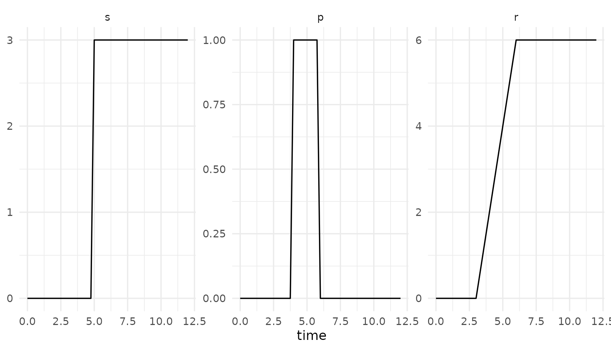
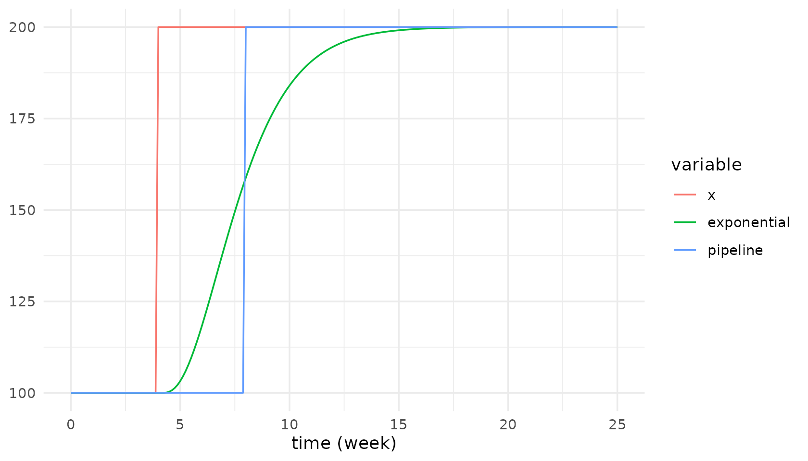
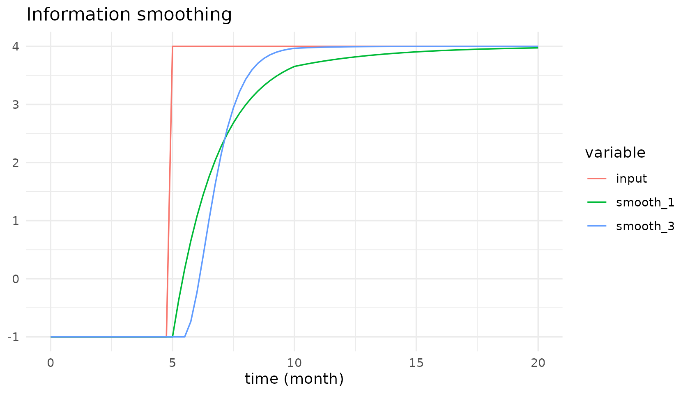
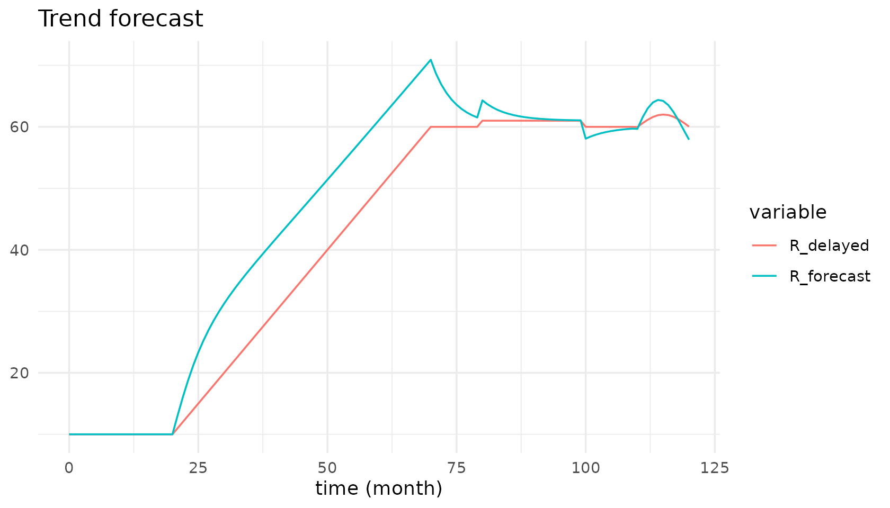

library(tidysd)
#>
#> Attaching package: 'tidysd'
#> The following object is masked from 'package:stats':
#>
#> simulateShaping functions
step(), pulse() and ramp()
follow Vensim’s argument order. They read the current time themselves,
so you never write t unless you want to.
shapes <- sd_structure(aux("s"), aux("p"), aux("r"))
out <- simulate(
shapes,
sd_equations(s ~ step(3, 5), p ~ pulse(4, 2), r ~ ramp(2, 3, 6)),
sd_parameters(),
spec = sim_spec(0, 12, 0.25)
)
autoplot(out)
-
step(height, time)– 0 beforetime,heightfromtimeon. -
pulse(start, width)– 1 during[start, start + width), else 0. The height multiplies on, so it stays a parameter rather than an argument. -
ramp(slope, start, end)– 0, then a linear rise, then held flat.
The height of a step() may itself be an expression of
time, which is how the forecast catalogue model drives a
sine wave in after month 100.
First-order delays: by hand, or as a built-in
A first-order material delay is just a stock whose outflow is the stock over a delay time. You can write that yourself:
hand <- simulate(
sd_structure(
stock("Material", units = "units", non_negative = TRUE),
flow("inflow", from = .source, to = "Material", units = "units/week"),
flow("outflow", from = "Material", to = .sink, units = "units/week")),
sd_equations(inflow ~ 100 + step(100, 4), outflow ~ Material / delay_time),
sd_parameters(constant(delay_time = 4), initial(Material = 400)),
spec = sim_spec(0, 25, 0.125, time_unit = "week")
)Or let delayN() build the same structure for you,
without adding buffer stocks by hand:
builtin <- simulate(
sd_structure(aux("inflow"), aux("outflow")),
sd_equations(inflow ~ 100 + step(100, 4),
outflow ~ delayN(inflow, 4, initial = 100)),
sd_parameters(),
spec = sim_spec(0, 25, 0.125, time_unit = "week")
)
all.equal(
out_hand <- subset(as.data.frame(hand), variable == "outflow")$value,
subset(as.data.frame(builtin), variable == "outflow")$value
)
#> [1] TRUEdelayN(x, delay, order, initial) is an
exponential delay: a cascade of order stocks, each
holding delay / order of the transit time.
initial is the delay’s output at
t = start – the same third argument Vensim’s
DELAY N takes – and defaults to x there.
order is read once, at initialisation.
Exponential versus pipeline
delay_fixed() is a conveyor, not a cascade: whatever
goes in comes out unchanged, exactly delay later. Side by
side on the same step input, that is the clearest statement of the
difference.
cmp <- simulate(
sd_structure(aux("x"), aux("exponential"), aux("pipeline")),
sd_equations(
x ~ 100 + step(100, 4),
exponential ~ delayN(x, 4, order = 3, initial = 100),
pipeline ~ delay_fixed(x, 4, initial = 100)),
sd_parameters(),
spec = sim_spec(0, 25, 0.125, time_unit = "week")
)
autoplot(cmp, vars = c("x", "exponential", "pipeline"), facet = "none") +
ggplot2::aes(colour = variable)
Delay times that are not whole multiples of dt round to
the nearest step, and the delay may itself be a variable.
Smoothing at any order
Vensim’s five spellings – SMOOTH, SMOOTHI,
SMOOTH3, SMOOTH3I, SMOOTH N –
collapse into one built-in with two optional arguments.
out <- sd_example_run("smooth")
autoplot(out, vars = c("input", "smooth_1", "smooth_3"), facet = "none") +
ggplot2::aes(colour = variable)
Here the input steps from -1 to 4 at month 5 and the adjustment time steps from 2 to 4 at month 10, so the smooths chase a moving target through a moving time constant. Higher order lags more early and catches up harder later.
Because order is fixed at initialisation,
smoothN(input, adjustment_time, order = 2 + step(1, 10))
stays second-order for the whole run – which is exactly what the Vensim
reference output shows.
Forecasting
forecast(x, average_time, horizon) is sugar, not new
semantics: it is exactly
x * (1 + horizon * (x - smoothN(x, average_time)) / (smoothN(x, average_time) * average_time))Smooth the input, read the growth rate implied by the gap between the input and its own smooth, and project it forward. It is deliberately naive, and overshoots turning points – which is the point.
out <- sd_example_run("forecast")
autoplot(out, vars = c("R_delayed", "R_forecast"), facet = "none") +
ggplot2::aes(colour = variable)
An aux-only model
When a delay or smooth carries all the state, a model needs no hand-declared stocks at all – the smooth is the stock. The internal stages never appear in the output.
sd_variables(sd_example("smooth")$structure)
#> # A tibble: 7 × 7
#> name type units dims from to doc
#> <chr> <chr> <chr> <chr> <chr> <chr> <chr>
#> 1 input aux NA NA NA NA NA
#> 2 adjustment_time aux NA NA NA NA NA
#> 3 smooth_1 aux NA NA NA NA NA
#> 4 smooth_1i aux NA NA NA NA NA
#> 5 smooth_3 aux NA NA NA NA NA
#> 6 smooth_3i aux NA NA NA NA NA
#> 7 smooth_n aux NA NA NA NA NA
unique(sd_example_run("smooth")$variable)
#> [1] "input" "adjustment_time" "smooth_1" "smooth_1i"
#> [5] "smooth_3" "smooth_3i" "smooth_n"